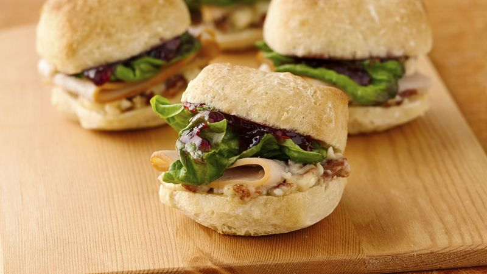

Cherry Chicken Panini
Homepage

The Dish
Simple, fast, light, easy and breezy lunch recipe! All you need is a panini press or hot pan and something to use as a weight!
Ingredients
- Your favorite bread
- 1/4lb of deli sliced turkey meat
- Cherry perserves
- Deli sliced swiss cheese
- arugala
- pickle spear
Instructions
- On a slice of bread place 1/4 of turkey topped with swiss cheese and arugala. Smear cherry perserves on the peiece of bread used to top off the sandwhich.
- Place sandwhich on panini press and let it cook until cheese is melty and the meat is warm.
- Serve with pickle spear on the side. This dish also goes great with any fresh fruit!
- Most critical step; ENJOY!